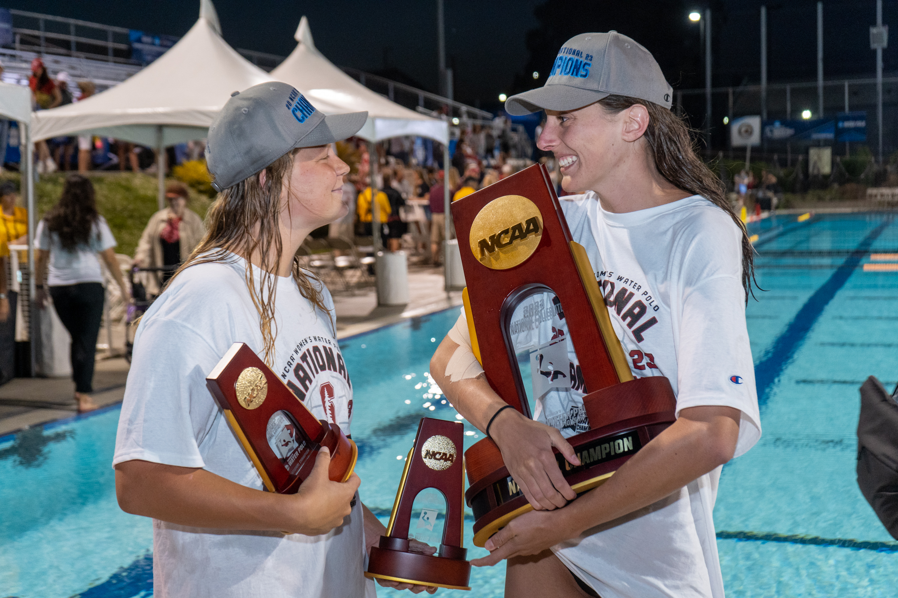

Failure is inevitable in a sport like water polo, but what you learn
from the failure is the key to helping you succeed the next time.
The design world moves fast and fails often, failure is an essential
part of exploration and creativity. I am confident that my
resilience will drive me to continue learning from failures and move
towards a successful outcome.
“Enlighted trial and error succeeds over the planning of the lone
genius” - Tom Kelly

2x Division 1 NCAA Champion (2022, 2023)
Women's Water Polo
Stanford Student Athlete 2020-2025

Team Captain 2024 season
Three-time ACWPC All-American (2022-24)
Two-time All-MPSF conference (2022-23)
NCAA All-Tournament Second Team (2022)
Transferrable Skills: Stanford Athlete -> SWE/Designer
click on the skills to read more
The schedule of a student athlete in computer science and symbolic systems is demanding. At a minimum I devote 20 hours a week to water polo. I quickly had to learn how to put my head down and work, getting the most out of every hour. I strongly believe that this ability will make me very efficient in a work place environment.
No one can win alone in water polo, it requires a tight knit group who can always show up for eachother and work to make eachother better, on a true team every member has a valued role that advances the team's goal. SWE & design roles are extremely collaborative, as a life long team sport athlete I thrive in these kinds of environment.
Goalie is a unique position in water polo, it requires you to build a strong leadership presence from a young age. Throughout my career I've observed and learned from many different leadership styles while simultaneously cultivating my own in the cage. In a work setting, I believe my hands on experiences whether it's from being a team captain to a freshman 2nd string goalie will allow me to be both a leader and a learner on the job.